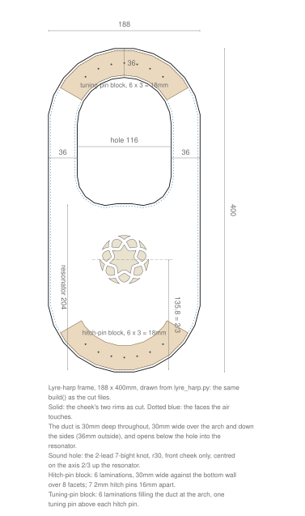
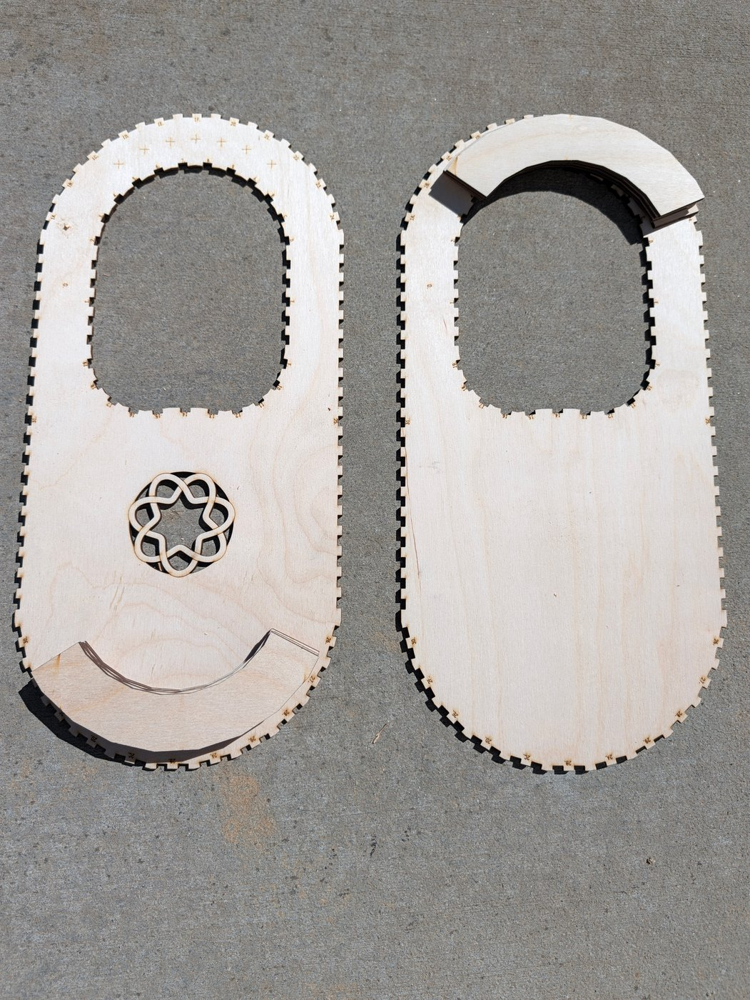
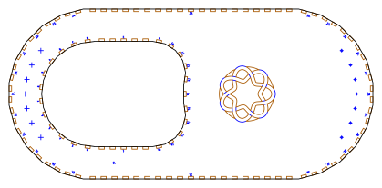

Lyre-harp
A seven-string lyre-harp frame, 188 × 400mm, built as one closed duct between two flat cheeks. Over the arch and down the sides the duct is 30 × 30mm; below the string hole it opens across the whole gap to the outer wall, and that air is the resonator. Output is millimetre-true — 1 user unit = 1 mm with a physical width/height — so it prints and cuts at real size.
 |
| lyre-harp-drawing.svg · the review drawing, not a cut file |

The parts are cut. Both cheeks, with the laminations of the tuning-pin block and the hitch-pin block stacked where each one goes. It is not assembled yet:

Built for LaserMadeMusic, where the cutting and assembly are shown.
The rest of the build files — every instrument, generator and tool, indexed.
The frame
The two walls are drawn independently, not offset from one centreline. The outside is a stadium: a half-circle at each end joined by parallel sides. The string hole has a half-circle top concentric with the outer one, parallel sides, and a bottom of two rounded corners with a small bump rising between them. Where the walls run a bore apart the duct is square; below the hole they part, and the duct stays 30mm deep, cheek to cheek, but runs 203.7mm along the axis.
49 wall panels stand between the cheeks: 25 round the string hole and 24 round the outside, each numbered, with the same number engraved beside its slot.
The sound hole is the 2-lead 7-bight knot from knotwork-soundholes, radius 30mm, placed unchanged in the front cheek on the long axis, two thirds of the way up the resonator: 135.8mm from its bottom. The back cheek is plain, so the cheeks are two parts, each cut once.
Seven strings, 16mm apart. Two blocks of six 3mm laminations, 18mm deep, give the pins something to bite into, since 3mm of ply will not hold one under tension:
- the hitch-pin block lies against the bottom wall over 8 facets, 30mm wide from it;
- the tuning-pin block fills the duct over the arch, wall to wall, across 120°.
Each tuning pin stands in line with its hitch pin across the instrument.
What is on the sheets
Measured out of the files, not copied from whatever drew them. Every sheet fits a 600 × 308mm bed; the largest is 593 × 208mm.
| Sheet | Size | What is on it |
|---|---|---|
lyre-harp-bore30-188x400mm-narrow-cheek-a-cut-files.svg |
419.8 × 208.0mm | the front cheek: 49 slots, the knot, the pin marks |
lyre-harp-bore30-188x400mm-narrow-cheek-b-cut-files.svg |
419.8 × 208.0mm | the back cheek: 49 slots |
lyre-harp-bore30-188x400mm-narrow-panels-cut-files.svg |
593.3 × 136.4mm | the 49 wall panels, numbered |
lyre-harp-bore30-188x400mm-narrow-hitch-block-cut-files.svg |
404.3 × 178.0mm | six hitch-block laminations |
lyre-harp-bore30-188x400mm-narrow-tuning-block-cut-files.svg |
404.2 × 178.0mm | six tuning-block laminations |
All of them are in lyre-harp-bore30-188x400mm/cut-files/.
Run the colours blue, orange, black: blue engraves, orange cuts the slots and the knot's waste, black frees the part. Only the two cheeks have an orange stage; the panels and the laminations are blue and black. That is the sequence every LaserMadeMusic repository uses — blue engraves, then green → orange → cyan → black, black always the cut that frees the part. These sheets have no green or cyan stage.
 |
| cheek A · 419.8 × 208.0mm sheet |

Click it to download the cut file. This is a display rendering — the cut file draws a hairline on no background, which a browser shows almost invisibly. Orange is darkened in the picture; at full strength it is too pale to read against a white ground. The cut file keeps the exact value.
Before you cut
Cut it in 3mm Baltic birch plywood. The slots are drawn for a 3mm sheet at a 0.13mm kerf, measured, and the finger joints are drawn tighter than that — as if the kerf were 0.25mm — so they close with a rubber mallet rather than a thumb. The joints are press-fit; shellac seals the air gaps.
Three test sheets come first if your laser or your ply is not the one these were tuned on:
| Sheet | What it tells you |
|---|---|
KERF-TEST-3mm-ply.svg |
your kerf: ten cuts across a strip, and a square hole against the piece that fell out of it |
lyre-harp-bore30-188x400mm-narrow-FIT-LADDER-cut-files.svg |
the fit: one joint drawn at 0.15, 0.18, 0.21, 0.24 and 0.27, each coupon engraved with its value in hundredths |
lyre-harp-bore30-188x400mm-narrow-test-arch-4toA-cut-files.svg |
a slice of the arch, 17 parts, to stand up before committing a whole frame |
The pin marks are engraved, not cut. A hole in the cheek alone would not guide a drill on into the block behind it, so each hitch pin is a 2mm circle with a cross through it, and each tuning pin is a cross alone: its diameter is yours to choose, and a circle drawn at a guess would read as the hole to drill.
The laminations are glued, in number order, into each block.
lyre-harp-bore30-188x400mm-narrow-cheek-a-BACK-FACE-numbers-engrave-only.svg has no cut line in it. It puts the 49 slot numbers on the back of cheek A, mirrored, for dropping the panels in from that side. Cut cheek A first, turn it over about its long axis — the 400mm one, so the sound hole stays at the same end — lay it in the same place and run this. Turned end for end instead, the numbers miss: the string hole is not symmetric that way.
No acoustic claim is made. The strings, the pins and the tuning are not in these files — this is the frame.
Regenerating it
Everything here is drawn by lyre_harp.py in trumpet-elbows-allowed, which shares the panel, slot and sheet code of that repository's ribbon bores. With both repositories cloned side by side, from this one:
G=../trumpet-elbows-allowed/parts/bore/concept/swept-curve/lyre_harp.py
python3 $G --no-write # run the checks, write nothing
python3 $G --out=DIR/lyre-harp-bore30-188x400mm-narrow.svg # the five sheets
python3 $G --fit=0.21 --out=DIR/lyre-harp-bore30-188x400mm-narrow.svg--fit= redraws the joints at another fit and moves nothing else; the kerf stays the measured one. The checks — panels clear of each other, every engraving on its part, the sound hole over the resonator, the pins in their blocks, every sheet on the bed — run on every write and stop it when one fails. .repro holds the exact command for every file here.
Files
lyre-harp-bore30-188x400mm/cut-files/ |
the five build sheets, the three test sheets and the back-face engraving |
lyre-harp-bore30-188x400mm/lyre-harp-bore30-188x400mm.html |
the frame in 3D, cheeks, panels and blocks, to drag round |
lyre-harp-drawing.svg |
the dimensioned review drawing — not a cut file |
previews/ |
display renderings of the five build sheets — not cut files |
photos/ |
the build so far, photographed |
README.md · index.html |
this writeup and its published page; the markdown is the source |
.repro |
the command that draws each shipped file |
Released under CC0 1.0.